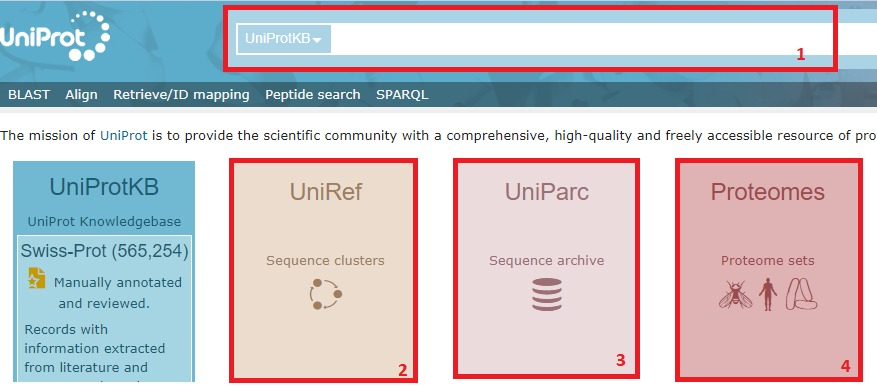

step by step
Como identificar y caracterizar un gen a partir de su secuencia de ADN
- Copiar la secuencia dada para introducirla en el programa BLAST
- Entrar en la opción que dice Nucleotide Blast
- Pegar la secuencia de ADN en donde indica “Enter Query Sequence”
- Apretar el boton que dice BLAST y esperar unos minutos por el resultado (una lista)
- Clickear sobre la primera secuencia de ADN que figura en la lista obtenida
- Entrar al link, que es un número azul, que corresponde a la secuencia clickeada en el paso anterior
- Copiar el número de locus, insertarlo en el programa Uniprot y apretar “Search”
- Clickear sobre la primera entrada que aparece e investigar
- Entrar al link del programa llamado KEGG Pathway
- Seleccionar el organismo donde dice “Organism”
- Donde dice “Enter keywords” ingresar el nombre de la enzima con el número EC que se saca de Uniprot
- De los mapas metabólicos que aparecen, seleccionar el más relevante de acuerdo a lo que se quiere conocer de este gen (entrar a la vía metabólica) Una vez encontrada la vía metabólica, que corresponde a la proteína, explorarla
Cómo encontrar secuencias de ADN de genes de interés
- Ingresar a la plataforma NCBI y entrar al sitio llamado Gene
- Tipear el nombre del gen en la parte superior y clickear en “search”
- Seleccionar también una especie para acotar la búsqueda
- De la lista de proteínas que devuelve, elegir una e iniciar la exploración
- Entrar a los enlaces a la secuencia del ARNm y a la proteína
- Entrar a Uniprot con el locus correspondiente a esta proteína
- Chequear si en la ubicación subcelular se encuentra la explicación de para qué sirve el péptido señal
- Repetir el ejercicio con la quitinasa de tomate
- Buscar que representan las estructuras de exones e intrones y como se procesan durante la maduración del ARNm
Pasos con Imagenes

- Este es el camino principal. A partir de una secuencia de nucleótidos, buscará otra similar
- En este caso, a partir de una secuencia de nucleótidos, la traduce para luego buscar una proteína similar #
- Este es el camino inverso al (2), donde a partir de una proteína se buscan posibles secuencias traducidas de nucleótidos que hayan creado esa proteína #
- Finalmente, se puede buscar proteínas similares.

En nuestro camino principal, nos piden insertar nuestra secuencia. Esta puede ser un número de acceso, un FASTA, etc. En caso de que queramos, podemos también realizar un BLAST de 2 o más secuencias para compararlas
Tenemos la opción también de poder buscar nuestra secuencia en diferentes bases de datos:
- Bases de datos estándar: Contiene dentro suyo varias opciones, como base de datos de nucleótidos, de RNA RefSeq, etc.
- ARNr/ITS: Sirve más que nada para encontrar secuencias de ARN ribosomal de procariontes
- Genomic + Transcript: Incluye ARNs curados por RefSeq y modelos de ARN predichos.
- BetaCoronavirus
También podemos centrar nuestra búsqueda en organismos específicos
Por último, tenemos 3 programas de blast:
- Megablast: Para secuencias altamente similares, es más rápido. +Discontiguous megablast: Sirve para comparación entre especies distintas, ignora algunas bases
- BlastN: Más lento, pero utiliza todas las secuencias.
- En descripciones, podemos ver diferentes datos sobre las secuencias que encontramos, como por ejemplo:
- Nombre científico
- E Value: Es la chance de que la similitud ocurra por chance. Por ejemplo, una secuencia corta puede aparecer dentro de otra solamente por chance.
- Scores: El máximo es la puntuación de la alineación entre la secuencia query y el segmento del de la base de datos. El total es la suma de todas las alineaciones de la secuencia que alineen con la query
2- El gráfico: 3. “Alignment” nos da la alineación de las secuencias con nuestra query. También nos da el ID de la secuencia, que necesitaremos para seguir nuestro hands-on. 4. “Taxonomy” nos da el Linaje, el organismo y la taxonomía de la secuencia. 5. Como podemos observar, nuestra query encuentra varias secuencias que tienen un alto porcentaje de alineamiento. Estas secuencias también incluyen todas las opciones dichas previamente 6. Finalmente, podemos filtrar los resultados por organismos, por porcentaje de identidad, valor E y “Query Coverage”.
- Toda la información principal sobre esta entrada se encuentra aquí.
- Tenemos la opción de analizar la secuencia de diferentes maneras como por ejemplo:
- Un BLAST como veníamos haciendo
- Construir cebadores para esta secuencia (útiles para PCR)
- Encontrar subsecuencias
- “Gene” nos muestra toda la secuencia del gen.
- “Exón” nos muestra los exones de la secuencia. En este caso, es toda la secuencia
- “CDS” nos da la posible sub-secuencia codificante. Si seleccionamos esto, vemos que inicia en un ATG (START) y termina en un codón STOP (en este caso, TGA).
- Podemos ver información relacionada al gen, como: #
- Proteína que codifica
- Artículos de PubMed citados por la entrada *La taxonomía de la entrada
- Genes relacionados
 1. En nuestro camino principal, introducimos nuestro LOCUS en el buscador. 2. UniRef nos da conjuntos agrupados de secuencia, incluidas las isoformas, ocultando las secuencias redundantes. 3. UniParc es una base de datos no redundante que contiene casi todas las secuencias de proteínas públicamente conocidas. 4. Proteomes reúne a los proteomas, que son conjuntos de proteínas que se creen que están expresados por un organismo.
1. La entrada COPL14 es nuestra entrada principal, que está completa. Utilizaremos esta en nuestro hands-on. 2. La entrada B6SWA0 es la misma proteína, pero no está completa. 3. Si tuviéramos más entradas, podría ser mejor verlas organizadas de otra manera, como por su taxonomía o su ontología.
- La página nos da varias herramientas para analizar la proteína. Algunas de estas serán vistas en profundidad en la próxima captura
- La proteína también tiene una calificación de “annotation” y su estado (revisada-no revisada por SwissProt)
1. Podemos ver el linaje taxonómico de nuestra proteína 2. Como habíamos dicho antes, proteomas era el conjunto de proteínas expresadas por un organismo. Si clickeamos sobre UP00… , podemos ver que es el Zea Mays, nuestro organismo.
- Podemos centrarnos en diferentes partes específicas de la proteína.
- También podemos ir a la página específica donde se creó el modelo de la estructura.
1. Utilizamos el buscador para buscar el organismo que necesitamos. KEGG también tiene varios mapas de rutas para, por ejemplo: * Metabolismos * Desarrollo de drogas
1. El mapa de la ruta metabólica de la fenilalanina. 2. Tenemos varios links para ver más genes relacionados a la Zea Mays.
- Nuestra enzima junto a la fenilalanina.
- Diferentes maneras de ver la ruta de la biosíntesis del fenilpropanoide.
 * Buscador del gen * Podemos filtrar los resultados por taxones o en base de datos específicas.
* Buscador del gen * Podemos filtrar los resultados por taxones o en base de datos específicas.
- Nuestra secuencia de ADN junto a su ARNm (azul) y su proteína (rojo)
- Tenemos la opción de ver la secuencia en FASTA, GenBank o en el gráfico de la imagen.
* La página GenBank del ARNm. Tiene opciones similares a la de la secuencia de ADN del maíz.
* La página de GenBank de la proteína. Tiene funciones similares a la de la secuencia de ADN (acordes a una proteína).
Preguntas
- ¿Qué significa el alineamiento? ¿Cómo se ve si clickeas en proteínas con menor porcentaje de identidad? Cómo encontramos un alineamiento del 100%, significa que esta secuencia de nucleótidos está notada en la base de datos. Digamos que por ejemplo, quiero comparar mi secuencia con otras de las posibles secuencias similares que no sean la dicha anteriormente. Al analizarlas, veremos que comienzan en puntos diferentes, (por ejemplo, con el bambú gigante mi secuencia comienza en la pb 148 y la Subject en la 24). Además, notaremos más gaps y mismatches a medida que se reduce la similaridad
- ¿Qué proteína es? Es la fenilalanina-amonio-liasa, una enzima encargada de catalizar una reacción que transforma la L-fenilalanina en amoníaco y ácido trans-cinámico. Recientemente ha comenzado a investigarse su uso en tratamientos para pacientes con Fenilcetonuria, una alteración del metabolismo que no permite sintetizar el amoníaco tirosina a partir de la fenilalanina en el hígado.
- ¿Por qué la CDS es más chica que la región abarcada por el exón? Esto es por consecuencia de los codones de iniciación y terminación de la secuencia.
- ¿Dónde están los codones de iniciación y de terminación? El codón de iniciación se encuentra en el pb 122-124 y el codón de terminación se encuentra en el pb 2270-2272.
- ¿ Por qué la planta sensible a la enfermedad que originó este estudio era incapaz de sintetizar ácido cumárico? ¿Qué otras sustancias relacionadas con la resistencia a enfermedades podrían estar ausentes en este tipo de plantas? La planta sensible a la enfermedad no podía sintetizar ácido cumárico ya que la secuencia que codifica la fenilalanina-amonio-liasa, que participa en la ruta de biosíntesis de fenilpropanoide.
- La barra azul representa el ARNm y la roja, la proteína. ¿Por qué la barra roja es más corta que la azul? Porque no todo el ARNm mensajero codifica, sino solo la parte entre el codón START y el codón STOP.

- Qué es una péptido señal? ¿Por qué la proteína “pathogenesis-related protein 1 precursor” es precursora? Una péptido señal son los 1ros aminoácidos que aparecen en la proteína, y determinan el destino, la ruta de transporte y la eficiencia de secreción de la proteína. Esta proteína es precursora ya que la proteína subsecuente en sí es perjudicial, pero puede ser necesitada a corto plazo y/o en grandes cantidades.
- ¿Qué son los exones e intrones? ¿Cómo se procesan durante la maduración del ARNm? Los exones son secuencias codificantes del gen, mientras que los intrones son aquellas que no codifican. Durante la maduración, los intrones son eliminados mediante el splicing, y luego los exones son acoplados entre ellos.